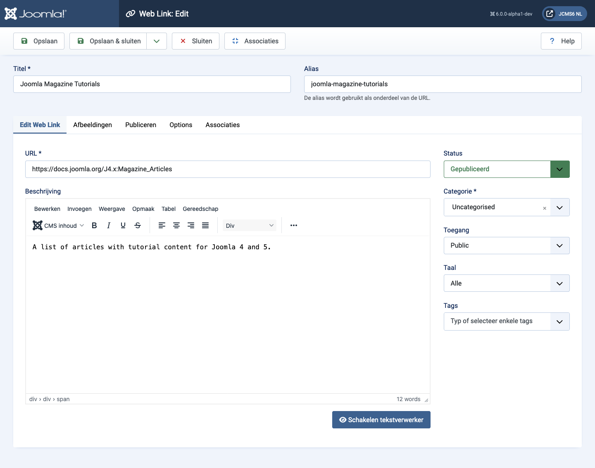
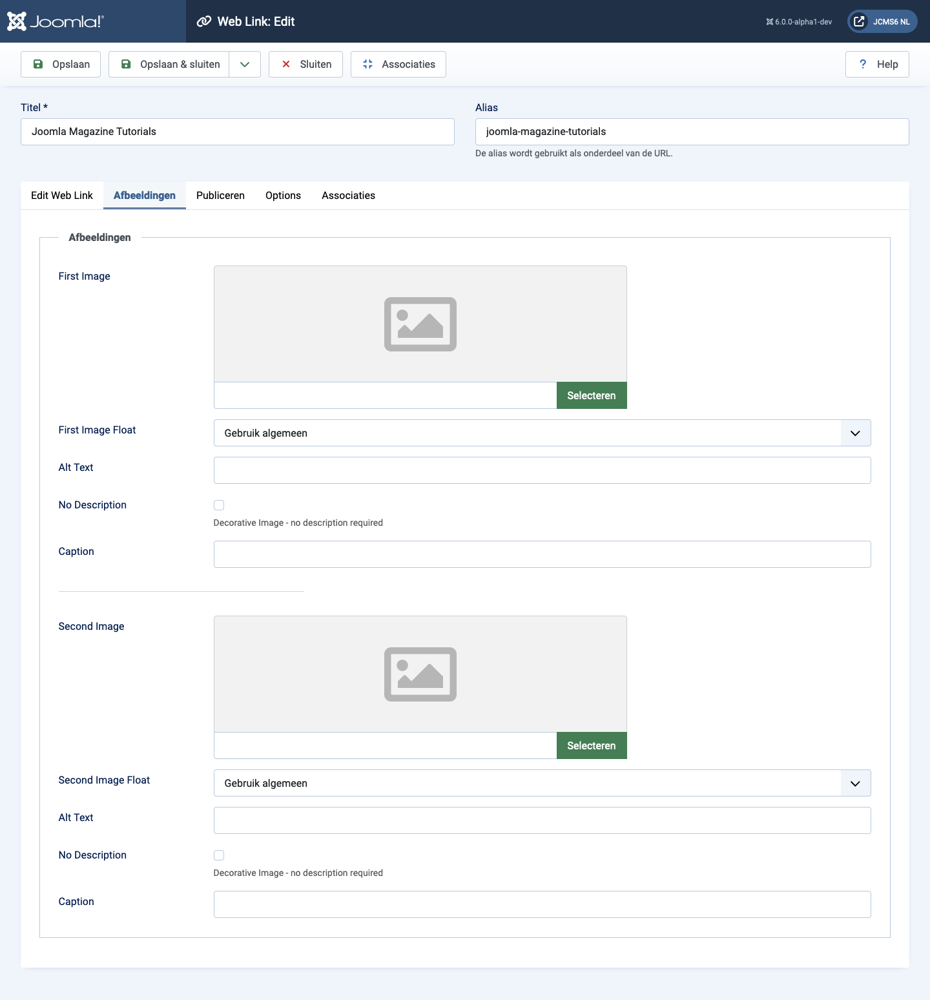
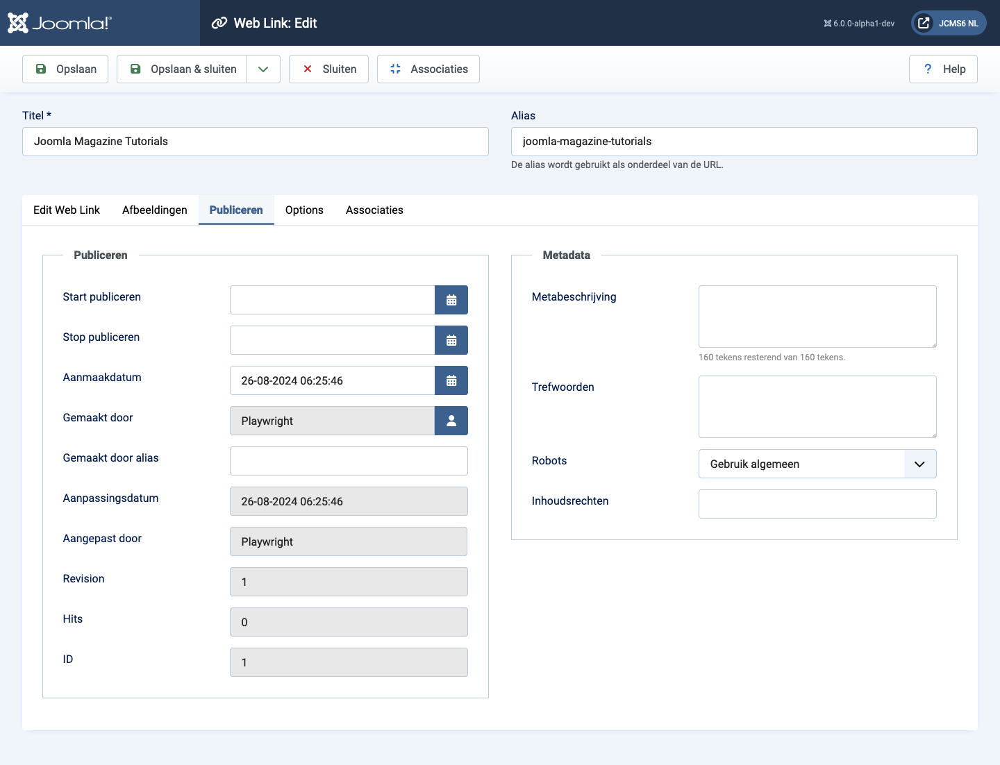
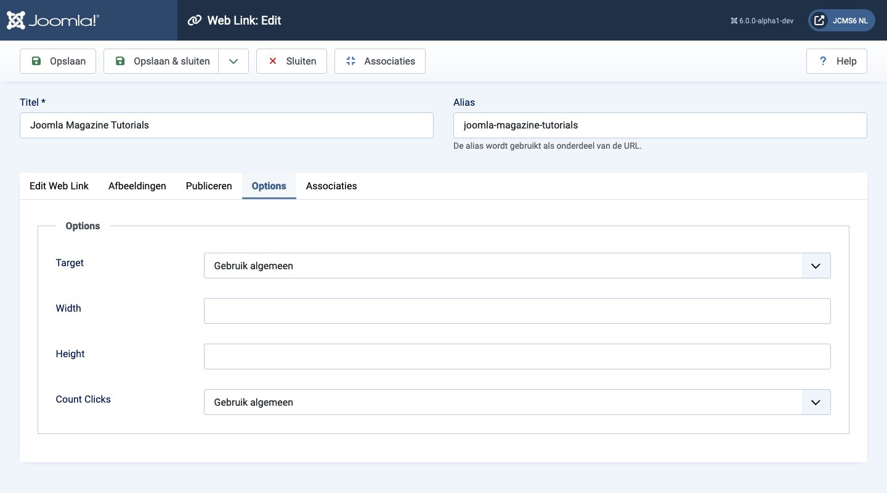

Joomla Help Screens
Web Link: Bewerken
Beschrijving
Dit formulier wordt gebruikt om een nieuwe weblink toe te voegen of een bestaande link te bewerken. Merk op dat je ten minste één weblinkcategorie moet aanmaken voordat je je eerste weblink kunt maken.
Algemene elementen
Sommige elementen van deze pagina worden behandeld in aparte Help-artikelen:
Hoe te Toegang
- Selecteer Componenten → Weblinks → Links uit het Beheerdersmenu. Dan...
- Selecteer de Nieuw knop in de Toolbar om een nieuwe link aan te maken. Of...
- Selecteer een titel in de lijst van links om een bestaande link te bewerken.
Screenshot

Formuliervelden
Linker Paneel
- URL De URL van de Weblink.
- Beschrijving De beschrijving voor het item. Categorie-, Subcategorie- en Weblink-beschrijvingen kunnen op webpagina's worden weergegeven, afhankelijk van de parameterinstellingen. Deze beschrijvingen worden ingevoerd met dezelfde editor die wordt gebruikt voor Artikelen.
Afbeeldingen Tab

- Eerste Afbeelding Klik op Selecteren om een afbeelding te selecteren die moet worden weergegeven met dit item aan de voorkant.
- Afbeelding Uitlijnen Waar de afbeelding moet worden geplaatst ten opzichte van de tekst op de pagina.
- Alt tekst Alternatieve tekst voor bezoekers die geen toegang hebben tot afbeeldingen. Deze tekst wordt vervangen door de bijschrifttekst als die beschikbaar is.
- Bijschrift Het bijschrift voor de afbeelding.
- Tweede Afbeelding Klik op Selecteren om een afbeelding te selecteren die moet worden weergegeven met dit item aan de voorkant.
- Afbeelding Uitlijnen (Gebruik Globaal/Rechts/Links/Geen). Waar de afbeelding moet worden geplaatst ten opzichte van de tekst op de pagina.
- Alt tekst Alternatieve tekst voor bezoekers die geen toegang hebben tot afbeeldingen. Deze tekst wordt vervangen door de bijschrifttekst als die beschikbaar is.
- Bijschrift Het bijschrift voor de afbeelding.
Publiceren Tab

- Start Publiceren Datum en tijd om te beginnen met publiceren. Gebruik dit veld als je inhoud van tevoren wilt invoeren en deze dan op een toekomstig tijdstip automatisch wilt laten publiceren.
- Einde Publiceren Datum en tijd om te stoppen met publiceren. Gebruik dit veld als je wilt dat inhoud op een toekomstig tijdstip automatisch verandert naar niet-gepubliceerd (bijvoorbeeld wanneer het niet langer relevant is).
- Aangemaakt Datum Dit veld wordt standaard ingesteld op de huidige tijd wanneer het artikel is aangemaakt. Je kunt een andere datum en tijd invoeren of op het kalenderpictogram klikken om de gewenste datum te vinden.
- Aangemaakt Door Naam van de Joomla! gebruiker die dit item heeft aangemaakt. Dit wordt standaard ingesteld op de momenteel ingelogde gebruiker. Als je dit wilt veranderen naar een andere gebruiker, klik je op de Selecteer Gebruiker knop om een andere gebruiker te selecteren.
- Alias van Auteurs Dit optionele veld stelt je in staat om een alias voor deze auteur voor dit artikel in te voeren. Hiermee kun je een andere auteursnaam weergeven voor dit artikel.
- Gewijzigd Datum (Alleen informatief) Datum van de laatste wijziging.
- Gewijzigd Door (Alleen informatief) Gebruikersnaam die de laatste wijziging heeft doorgevoerd.
- Revisie (Alleen informatief) Aantal revisies aan dit item.
- Hits Het aantal keer dat een item is bekeken.
- ID Dit is een uniek identificatienummer voor dit item dat automatisch door Joomla! wordt toegekend. Het wordt intern gebruikt om het item te identificeren, en je kunt dit nummer niet veranderen. Wanneer je een nieuw item aanmaakt, geeft dit veld 0 weer totdat je de nieuwe invoer opslaat, op welk punt een nieuwe ID aan het item wordt toegewezen.
- Meta Beschrijving Een optionele paragraaf om te gebruiken als de beschrijving van de pagina in de HTML-uitvoer. Dit wordt meestal weergegeven in zoekresultaten van zoekmachines. Indien ingevoerd, wordt een HTML-meta-element aangemaakt met een naam-attribuut van "description" en een content-attribuut gelijk aan de ingevoerde tekst.
- Meta Trefwoorden Optionele invoer voor trefwoorden. Moeten worden ingevoerd, gescheiden door komma's (bijvoorbeeld "katten, honden, huisdieren") en kunnen in hoofdletters of kleine letters worden ingevoerd (bijvoorbeeld "KATTEN" zal overeenkomen met "katten" of "Katten").
- Externe Referentie Een optionele referentie die wordt gebruikt om te linken naar externe databronnen. Indien ingevoerd, wordt een HTML-meta-element aangemaakt met een naam-attribuut van "xreference" en een content-attribuut gelijk aan de ingevoerde tekst.
- Robots De instructies voor web "robots" die deze pagina doorlopen.
- Gebruik Globaal: Gebruik de waarde ingesteld in Component→Opties voor deze component.
- Index, Volgen: Indexeer deze pagina en volg de links op deze pagina.
- Niet indexeren, Volgen: Indexeer deze pagina niet, maar volg de links op de pagina. Bijvoorbeeld, je kunt dit doen voor een sitenavigatiepagina waar je wilt dat de links worden geïndexeerd, maar je wilt niet dat deze pagina wordt weergegeven in zoekmachines.
- Indexeren, Niet volgen: Indexeer deze pagina, maar volg geen links op de pagina. Bijvoorbeeld, je kunt dit doen voor een evenementenkalender, waarbij je wilt dat de pagina wordt weergegeven in zoekmachines maar je wilt niet dat elk evenement wordt geïndexeerd.
- Niet indexeren, niet volgen: Indexeer deze pagina niet en volg geen links op de pagina.
- Inhoud Rechten Beschrijf welke rechten anderen hebben om deze inhoud te gebruiken.
Opties Tab

- Doel Hoe de link moet worden geopend. Opties zijn:
- Openen in oudervenster. Open de link in het huidige browservenster, waardoor Vooruit en Achteruit navigatie mogelijk is.
- Openen in nieuw venster. Open de link in een nieuw browservenster, waardoor Vooruit en Achteruit navigatie mogelijk is.
- Openen in popup. Open de link in een popupvenster.
- Modaal. Open de link in een modaal scherm.
- Breedte Breedte van het IFrame-venster. Voer een aantal pixels in of een percentage (%). Bijvoorbeeld, "550" betekent 550 pixels. "75%" betekent 75% van de paginabreedte.
- Hoogte Hoogte van het IFrame-venster. Voer een aantal pixels in of een percentage (%). Bijvoorbeeld, "550" betekent 550 pixels. "75%" betekent 75% van de pagina-hoogte.
- Kliks Teller Of het aantal keren dat deze weblink is geopend wordt bijgehouden.